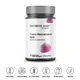
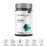
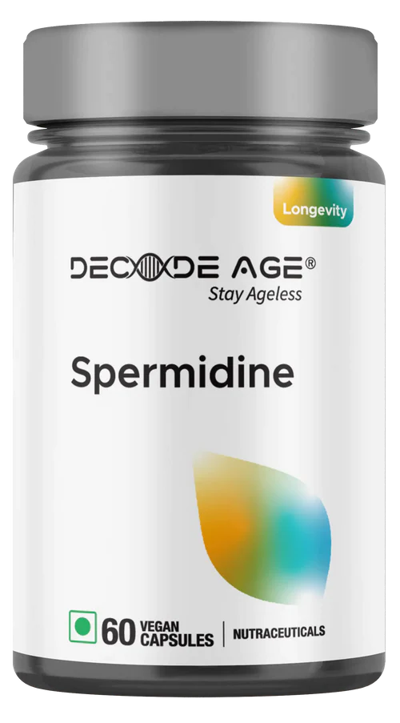
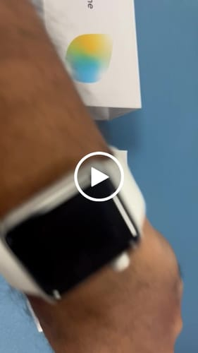
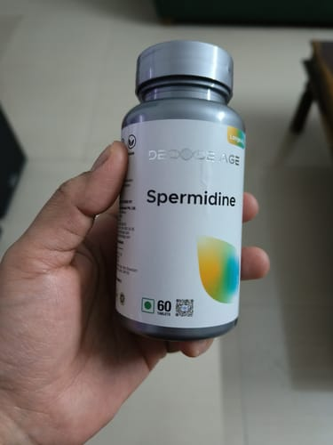
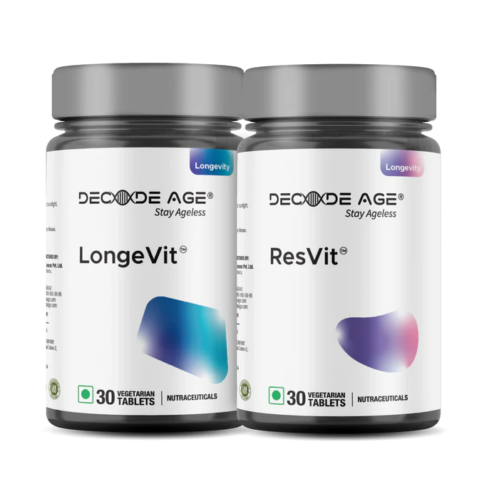

✔This order qualifies for free shipping
Spermidine 98% Pure & 100x More Potent - 10mg, 60 Veg Capsules
4.4 ⭐⭐⭐⭐See all reviews
Discover the magic of cellular regeneration with Decode Age's Spermidine Supplement. Our supplement, made with high purity, boosts autophagy, cognitive function, and promotes healthy aging. Experience energy and longevity in one easy capsule. Begin your journey with Decode today to redefine your wellness story.

Buy Now
One-Time Purchase
Subscribe & Save up to
40%
How to save 40% with a subscription
Choose Quantity:
FREE Shipping | 30-day money back guarantee
Buy it with

NMN UTHEVER 1000 - World Purest NMN -
500mg, 60 Veg Capsules
₹2,999.00 INR

Trans Resveratrol 99.5% Pure - 500mg, 60 Veg
Capsules
₹2,499.00 INR

Fisetin 99% Pure - 100mg, 30 Vegan Capsules
₹1,199.00 INR
Product specification
Prepare to experience a health revolution with Decode Age Spermidine Supplement, your wellness companion with 99% pure Spermidine Trihydrochloride. Here's an overview of the several advantages you're going to uncover.
| When to Consume | Start with one tablet daily, preferably with a meal. After assessing your tolerance, increase to two tablets daily - one in the morning and one in the evening. |
|---|---|
| Serving | Serving Size: 1 Tablet Servings Per Container:60 |
| Contains | 60 Veg Tablets |
| Key Ingredients | ✔ 99% Pure Spermidine Trihydrochloride ✔ 10mg per Tablet |
Benefits
Your Healthy Ageing Journey Starts Here. Decode Age’s Spermidine...
Enhances Neuroprotection
Spermidine protects neurons from oxidative stress and inflammation supporting brain health.
Induces Autophagy
By fueling autophagy, Spermidine empowers the body's natural cleansing process, promoting healthy ageing from within
Improves Skin and hair
Spermidine enhances collagen and hair follicle growth hence ensuring vibrant skin and luscious hair
Timeline
Day 1
Absorption and Distribution
Spermidine is converted to Spermine in your Gut and is absorbed into the bloodstream to enter the cells and activate autophagy genes.
Day 10
Improves Cellular Energy
Efficient removal & recycling of damaged cell components, improves cellular energy.
Day 20
Improves Cognition
Efficient removal of damaged proteins from neurons reduces brain fog and improves mental clarity.
Day 30
Enhances Skin Health
Boosts Collagen production, observe improved skin texture, tone and elasticity
Day 90
Promotes Hair Growth
A 90-day study showed that spermidine supplementation promoted hair growth and stress resistance in human subjects.
Day 180
Promotes Heart Health
Spermidine supplementation correlates with lowered blood pressure, reducing the risk of cardiovascular diseases and associated conditions.
Day 360
Improved Longevity
By establishing autophagy and promoting cellular recycling, Spermidine helps slow the body's ageing
Experience unparalleled purity with Decode Age's 99% pure Spermidine Trihydrochloride. Our vitamin outperforms the competition in terms of potency, having been extensively tested for quality.

How Autophagy and Spermidine Promote Cellular Health and Lifespan
Autophagy is pronounced "ah-TAH-fah-gee". Autophagy is a biological mechanism by which cells maintain homeostasis and secure their survival under a variety of situations. The term "autophagy" is derived from the Greek words for "self" and "eating," which provides insight into its fundamental function.
Autophagy is a vital, natural mechanism that keeps our bodies in good health. Consider it your body's housekeeping service, effectively removing damaged cells and recycling them as vital building blocks. This process is critical for delaying the aging process and protecting against disease.
Spermidine, a naturally occurring chemical, acts as a catalyst in this housekeeping activity. Scientifically, it inhibits an enzyme called acetyltransferase EP300, which activates autophagy. This suggests that spermidine helps provide the
Benefits of Spermidine in Chronic Disease Management
Spermidine, a naturally occurring polyamine, has been linked to a variety of health benefits due to its role in promoting autophagy, a process that helps cells remove waste and repair themselves.
Cardiovascular Diseases
Studies have suggested that spermidine may help maintain heart health by reducing arterial stiffness, enhancing endothelial function (the inner lining of blood vessels), and improving heart muscle function.
Alzheimer's Diseases
Spermidine may help protect against Alzheimer's by promoting the removal of amyloid-beta plaques (abnormal clusters of protein fragments) from brain cells.
Parkinson's Disease
Research indicates that spermidine might help improve cell survival and function in Parkinson's by promoting the removal of damaged mitochondria and reducing the buildup of alpha-synuclein, a protein that forms harmful clumps in the brains of patients with Parkinson's.
Colon Cancer
Spermidine has been studied for its potential to inhibit colon cancer cell proliferation and promote cancer cell death.
Breast Cancer
Preliminary research has indicated that spermidine might suppress the growth of breast cancer cells.
Age-related Macular Degeneration
This is a leading cause of vision loss among older adults. Spermidine might help protect retinal cells against oxidative stress, which contributes to this condition
Osteoporosis
Some research suggests that spermidine might promote bone health by enhancing osteoblast function (cells responsible for bone formation) and reducing osteoclast activity (cells that break down bone tissue).
Anti-Ageing and Wrinkles
Spermidine has the ability to induce autophagy, a cellular recycling process that declines as we age. By boosting this process, spermidine can help remove damaged proteins and organelles, leading to cellular rejuvenation. This can potentially result in reduced fine lines and wrinkles, and an improvement in the overall texture and elasticity of the skin.
Photoaging and UV Damage
Photoaging refers to skin damage caused by prolonged exposure to UV radiation. It's characterized by symptoms like wrinkles, pigmentation, and a leathery skin texture. Spermidine can potentially mitigate photoaging by enhancing the DNA repair process in skin cells damaged by UV exposure.
Skin Cancer
Preliminary studies suggest that spermidine might suppress the growth of certain types of skin cancer cells, including melanoma. It's thought that spermidine's ability to induce apoptosis (programmed cell death) and inhibit cell proliferation could be mechanisms behind this potential anti-cancer effect.
Wound Healing
Spermidine can stimulate the migration and proliferation of keratinocytes, the predominant cell type in the outermost layer of the skin. This is a critical step in the wound healing process, suggesting that spermidine could aid in skin repair following injury.
Atopic Dermatitis
Atopic dermatitis, also known as eczema, is a chronic skin condition characterized by inflammation and itchiness. Spermidine might help manage symptoms of atopic dermatitis by reducing skin inflammation and improving the skin barrier function.

Can NMN Supplements Improve Cognitive Function and Reduce Brain Fog in Ageing Adults?
In today's fast-paced world, mental clarity is crucial. Brain fog, though common, can disrupt cognitive function and overall well-being. Emerging solutions like NMN supplements offer hope for impro...
📅 Apr 1, 2024
What is LongeVit? Why Is It a Better Choice to Begin Your Healthy Ageing Journey?
LongeVit: The ultimate choice for NMN users seeking holistic ageing support, vitality enhancement, and comprehensive well-being.
📅 Mar 21, 2024
Exploring Trans-Pterostilbene: Functions, Benefits, Ideal Dosage, and Potential Risks
Trans Pterostilbene, a natural compound in blueberries, offers potent antioxidant protection, anti-inflammatory benefits, and potential cardiovascular and cognitive support. More bioavailable than ...
📅 Mar 16, 2024
Gopal ✅verified
16/03/2024
⭐⭐⭐⭐⭐
The first obvious effect I observed from the tablet was assistance with digesting. It considerably improves digestion. And I feel a lot lighter these days. Thank you, Decode Age.
Gopal
04/03/2024
⭐⭐⭐⭐⭐
Great package. Feels quality, and I like seeing all of the data on the bottle about how to use the lotion, as well as a brochure explaining the product's benefits. I have started using it. Will provide comment on the results after 1-2 months. Great effort, DecodeAge team..
Radhika ✅verified
30/10/2023
⭐⭐⭐⭐⭐
This is my first month utilizing this vitamin. There are no adverse effects. Feels good.
Recently viewed products
Boost Metabolism Bundle

₹3,500.00 INR
₹4,500.00 INR
LongeVit & ResVit Bundle

Save 6%
₹6,100.00 INR
₹6,500.00 INR
Heart Health Bundle

₹2,100.00 INR
₹3,000.00 INR
FAQ
What is Spermidine and what are its potential benefits?
Spermidine is a naturally occurring polyamine that plays crucial roles in cellular processes. It supports autophagy (cellular clean-up), aids in cellular renewal, fortifies the immune system, enhances cognitive function, supports cardiovascular health, and promotes healthier ageing.
What is autophagy?
Autophagy, derived from the Greek words "auto" (self) and "phagy" (eating), is a biological process in which your body's cells degrade and recycle their own components. It's a method for your cells to remove any damaged or superfluous elements and use them to generate energy or create new cellular components.
Why is autophagy important?
The process of autophagy is essential for preserving cellular health. It helps avoid cellular damage and dysfunction, which can result in a range of diseases, by getting rid of broken or dysfunctional parts. Furthermore, during times of stress or scarcity, autophagy can supply the cell with vital nutrients and energy by recycling cellular components.
How does Spermidine support cellular health and anti-aging?
Spermidine promotes autophagy, which improves cellular health and function by assisting the body in eliminating damaged cells. Spermidine may help delay the aging process and lengthen life by increasing autophagy and encouraging cellular renewal.
Are there any known side effects or precautions when taking
Spermidine?
Consuming spermidine is generally safe. Rarely, people may, nevertheless, have moderate stomach distress. Prior to beginning a new supplement regimen, always get advice from your healthcare professional, particularly if you are pregnant, nursing, using other drugs, or have a pre-existing medical condition.
What is the recommended dosage of Spermidine?
Decode Age Spermidine Supplement is advised to be taken twice a day, once in the morning and once in the evening.
What is Spermidine Trihydrochloride?
Spermidine For better stability and absorption, trihydrochloride, a polyamine molecule present in living tissues, is mixed with hydrochloride. It is recognized for boosting autophagy, which promotes cell regeneration and anti-aging, and for its important involvement in a number of metabolic processes in living things.
How is Spermidine Trihydrochloride better than other forms of
Spermidine?
Spermidine's stability is increased when combined with hydrochloride, guaranteeing the supplement's long-term potency and effectiveness. Additionally, the hydrochloride increases spermidine's bioavailability, or how well it is absorbed by your body, resulting in stronger health effects.
What is the importance of bioavailability in supplements like
Spermidine Trihydrochloride?
The term "bioavailability" describes the degree and speed at which a drug enters your bloodstream and gets ready to work. A supplement that has a high bioavailability makes sure that the active component may be absorbed to the fullest extent possible, which maximizes its advantageous effects.
How does Spermidine Trihydrochloride compare with other Spermidine
supplements on the market?
The stability, bioavailability, and effectiveness of a supplement can be influenced by the type of spermidine used. Because of its enhanced stability and absorption profile, spermidine trihydrochloride is frequently selected as a possibly more beneficial solution. However, each person's experience may differ.
Should I consult with a healthcare professional before taking
Spermidine Trihydrochloride?
Indeed, it is wise to speak with a healthcare provider before beginning a new supplement program. They are able to offer tailored guidance according to your requirements and existing state of health.
Do Spermidine Supplements have an expiration date?
Yes, spermidine supplements have an expiration date that is often listed on the bottle, just like any other nutritional supplement. Check the date before consuming anything at all.
Are there any specific dietary or lifestyle considerations when
taking Spermidine?
There are no specific dietary or lifestyle requirements when taking Spermidine. But eating a healthy, balanced diet, drinking plenty of water, working out frequently, and getting adequate sleep can all help the supplement work as intended.
Is Spermidine suitable for vegetarians or vegans?
Due to its plant-based composition, Decode Age Spermidine Supplement is appropriate for vegetarians and vegans alike.
Can Spermidine be used during pregnancy or while breastfeeding?
It is usually advised to speak with a healthcare provider prior to beginning a new supplement regimen when expecting or nursing a baby.
Are there any scientific studies or research supporting the use of
Spermidine?
The benefits of spermidine are indeed supported by a large body of scientific research and studies, especially when it comes to cellular health, cognitive function, cardiovascular health, and the aging process. To further grasp its advantages and its uses, further study is being done, nevertheless, as with many scientific fields.
How does autophagy contribute to health and longevity?
Studies have indicated that autophagy is critical for immunological response, lifespan, and general health. Numerous ailments, including as infections, malignancies, heart disease, and neurological illnesses, can be warded against with its assistance. Longevity has been associated with enhanced autophagy in a number of different species.
Can autophagy be influenced by diet or supplements?
Yes, it is known that some dietary practices, including fasting or calorie restriction, can promote autophagy. Furthermore, it has been shown that some substances and nutrients, such as spermidine, cause autophagy.
What is the content of Decode Age Spermidine Supplement?
Spermidine trihydrochloride is included in Decode Age Spermidine Supplement in 99% pure form. There are 60 pills in each container, and each tablet has 10 mg of spermidine.
How should I consume Decode Age Spermidine Supplement?
Two pills each day, one in the morning and one in the evening, are advised.
Can I use Decode Age Spermidine Supplement for improved skin
health?
Yes, spermidine has a benefit in that it stimulates cellular renewal, which can result in better skin health. It can provide the appearance of healthier, more luminous skin.
Does Spermidine provide any potential benefits for cognitive
health or brain function?
By lowering inflammation, promoting the development of memory cells, and aiding in the clearance of harmful protein clumps that may be a contributing factor in neurodegenerative illnesses like Alzheimer's and Parkinson's, spermidine supplementation promotes brain health.
Can Decode Age Spermidine Supplement support heart health?
It has been demonstrated that spermidine supports heart health by decreasing blood pressure, increasing autophagy, and minimizing arterial stiffness. A lower risk of cardiovascular illnesses may result from this.
How does Spermidine supplement promote healthy ageing and
longevity?
Spermidine levels naturally decrease with aging. Decode Age Spermidine supplements can restore these levels, trigger autophagy, and encourage living a longer, healthier life.
How can Spermidine assist with hair health and prevent hair loss?
Because spermidine is known to extend the hair cycle's anagen (growth) phase, hair health may be enhanced and hair loss may be avoided. Individual outcomes could differ, though, so it's always advisable to get guidance specifically from a healthcare professional.
How does Spermidine differentiate from other anti-ageing
supplements in the market?
Spermidine is unique in that it has a strong affinity for autophagy, which is the body's process of clearing away cells. Spermidine differs from other anti-aging supplements in that it not only supports cellular health but also fights age-related deterioration.
What is the typical timeframe to see noticeable results after
starting with Spermidine?
Within the first few weeks of consistent usage, some users may see improvements in their energy levels and cognitive performance, however individual experiences may differ. Benefits including improved cellular health, better aging, and increased immunity, however, might not show up right away.
Can Spermidine contribute to weight loss or aid in appetite
management?
Spermidine is not a weight-loss aid in and of itself. Nonetheless, it could enhance general metabolic health due to its involvement in enhancing cellular health and function. For the best possible health and weight control, always combine supplements with a healthy diet and frequent exercise.